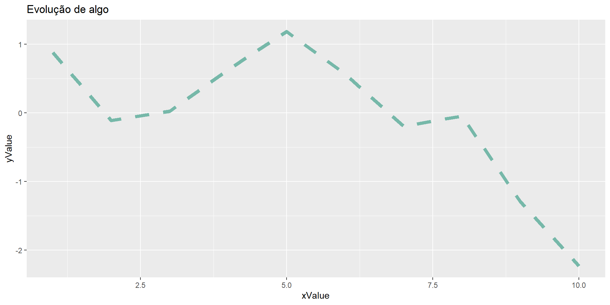

Visualização de Dados com ggplot2
Visualização de dados (ggplot2)
O ggplot2 é mais um pacote desenvolvido por Hadley Wickham, o criador do tidyr e do dplyr. A ideia do pacote, ainda que com algumas modificações, vem de uma obra chamada The Grammar of Graphics, que é uma maneira de descrever um gráfico a partir dos seus componentes.
ggplot2 \(\in\) tidyverse

Importância
Comparação
Gráfico de Resíduos
Dados
Todos os datasets que vamos utilizar são do pacote dados
milhas_por_galao cilindros cilindrada cavalos_forca eixo
Mazda RX4 21.0 6 160.0 110 3.90
Mazda RX4 Wag 21.0 6 160.0 110 3.90
Datsun 710 22.8 4 108.0 93 3.85
Hornet 4 Drive 21.4 6 258.0 110 3.08
Hornet Sportabout 18.7 8 360.0 175 3.15
Valiant 18.1 6 225.0 105 2.76
Duster 360 14.3 8 360.0 245 3.21
Merc 240D 24.4 4 146.7 62 3.69
Merc 230 22.8 4 140.8 95 3.92
Merc 280 19.2 6 167.6 123 3.92
Merc 280C 17.8 6 167.6 123 3.92
Merc 450SE 16.4 8 275.8 180 3.07
Merc 450SL 17.3 8 275.8 180 3.07
Merc 450SLC 15.2 8 275.8 180 3.07
Cadillac Fleetwood 10.4 8 472.0 205 2.93
Lincoln Continental 10.4 8 460.0 215 3.00
Chrysler Imperial 14.7 8 440.0 230 3.23
Fiat 128 32.4 4 78.7 66 4.08
Honda Civic 30.4 4 75.7 52 4.93
Toyota Corolla 33.9 4 71.1 65 4.22
Toyota Corona 21.5 4 120.1 97 3.70
Dodge Challenger 15.5 8 318.0 150 2.76
AMC Javelin 15.2 8 304.0 150 3.15
Camaro Z28 13.3 8 350.0 245 3.73
Pontiac Firebird 19.2 8 400.0 175 3.08
Fiat X1-9 27.3 4 79.0 66 4.08
Porsche 914-2 26.0 4 120.3 91 4.43
Lotus Europa 30.4 4 95.1 113 3.77
Ford Pantera L 15.8 8 351.0 264 4.22
Ferrari Dino 19.7 6 145.0 175 3.62
Maserati Bora 15.0 8 301.0 335 3.54
Volvo 142E 21.4 4 121.0 109 4.11
peso velocidade forma transmissao marchas carburadores
Mazda RX4 2.620 16.46 0 1 4 4
Mazda RX4 Wag 2.875 17.02 0 1 4 4
Datsun 710 2.320 18.61 1 1 4 1
Hornet 4 Drive 3.215 19.44 1 0 3 1
Hornet Sportabout 3.440 17.02 0 0 3 2
Valiant 3.460 20.22 1 0 3 1
Duster 360 3.570 15.84 0 0 3 4
Merc 240D 3.190 20.00 1 0 4 2
Merc 230 3.150 22.90 1 0 4 2
Merc 280 3.440 18.30 1 0 4 4
Merc 280C 3.440 18.90 1 0 4 4
Merc 450SE 4.070 17.40 0 0 3 3
Merc 450SL 3.730 17.60 0 0 3 3
Merc 450SLC 3.780 18.00 0 0 3 3
Cadillac Fleetwood 5.250 17.98 0 0 3 4
Lincoln Continental 5.424 17.82 0 0 3 4
Chrysler Imperial 5.345 17.42 0 0 3 4
Fiat 128 2.200 19.47 1 1 4 1
Honda Civic 1.615 18.52 1 1 4 2
Toyota Corolla 1.835 19.90 1 1 4 1
Toyota Corona 2.465 20.01 1 0 3 1
Dodge Challenger 3.520 16.87 0 0 3 2
AMC Javelin 3.435 17.30 0 0 3 2
Camaro Z28 3.840 15.41 0 0 3 4
Pontiac Firebird 3.845 17.05 0 0 3 2
Fiat X1-9 1.935 18.90 1 1 4 1
Porsche 914-2 2.140 16.70 0 1 5 2
Lotus Europa 1.513 16.90 1 1 5 2
Ford Pantera L 3.170 14.50 0 1 5 4
Ferrari Dino 2.770 15.50 0 1 5 6
Maserati Bora 3.570 14.60 0 1 5 8
Volvo 142E 2.780 18.60 1 1 4 2# A tibble: 344 × 8
especie ilha comprimento…¹ profu…² compr…³ massa…⁴ sexo ano
<fct> <fct> <dbl> <dbl> <int> <int> <fct> <int>
1 Pinguim-de-adélia Torgersen 39.1 18.7 181 3750 macho 2007
2 Pinguim-de-adélia Torgersen 39.5 17.4 186 3800 fêmea 2007
3 Pinguim-de-adélia Torgersen 40.3 18 195 3250 fêmea 2007
4 Pinguim-de-adélia Torgersen NA NA NA NA <NA> 2007
5 Pinguim-de-adélia Torgersen 36.7 19.3 193 3450 fêmea 2007
6 Pinguim-de-adélia Torgersen 39.3 20.6 190 3650 macho 2007
7 Pinguim-de-adélia Torgersen 38.9 17.8 181 3625 fêmea 2007
8 Pinguim-de-adélia Torgersen 39.2 19.6 195 4675 macho 2007
9 Pinguim-de-adélia Torgersen 34.1 18.1 193 3475 <NA> 2007
10 Pinguim-de-adélia Torgersen 42 20.2 190 4250 <NA> 2007
# … with 334 more rows, and abbreviated variable names ¹comprimento_bico,
# ²profundidade_bico, ³comprimento_nadadeira, ⁴massa_corporal# A tibble: 53,940 × 10
preco quilate corte cor transparencia profun…¹ tabela x y z
<int> <dbl> <ord> <ord> <ord> <dbl> <dbl> <dbl> <dbl> <dbl>
1 326 0.23 Ideal E SI2 61.5 55 3.95 3.98 2.43
2 326 0.21 Premium E SI1 59.8 61 3.89 3.84 2.31
3 327 0.23 Bom E VS1 56.9 65 4.05 4.07 2.31
4 334 0.29 Premium I VS2 62.4 58 4.2 4.23 2.63
5 335 0.31 Bom J SI2 63.3 58 4.34 4.35 2.75
6 336 0.24 Muito Bom J VVS2 62.8 57 3.94 3.96 2.48
7 336 0.24 Muito Bom I VVS1 62.3 57 3.95 3.98 2.47
8 337 0.26 Muito Bom H SI1 61.9 55 4.07 4.11 2.53
9 337 0.22 Justo E VS2 65.1 61 3.87 3.78 2.49
10 338 0.23 Muito Bom H VS1 59.4 61 4 4.05 2.39
# … with 53,930 more rows, and abbreviated variable name ¹profundidade# A tibble: 1,704 × 6
pais continente ano expectativa_de_vida populacao pib_per_capita
<fct> <fct> <int> <dbl> <int> <dbl>
1 Afeganistão Ásia 1952 28.8 8425333 779.
2 Afeganistão Ásia 1957 30.3 9240934 821.
3 Afeganistão Ásia 1962 32.0 10267083 853.
4 Afeganistão Ásia 1967 34.0 11537966 836.
5 Afeganistão Ásia 1972 36.1 13079460 740.
6 Afeganistão Ásia 1977 38.4 14880372 786.
7 Afeganistão Ásia 1982 39.9 12881816 978.
8 Afeganistão Ásia 1987 40.8 13867957 852.
9 Afeganistão Ásia 1992 41.7 16317921 649.
10 Afeganistão Ásia 1997 41.8 22227415 635.
# … with 1,694 more rowsOs Componentes de um gráfico
- Dados
- Mapeamento estético
- Geometria
milhas_por_galao cilindros cilindrada cavalos_forca eixo
Mazda RX4 21.0 6 160.0 110 3.90
Mazda RX4 Wag 21.0 6 160.0 110 3.90
Datsun 710 22.8 4 108.0 93 3.85
Hornet 4 Drive 21.4 6 258.0 110 3.08
Hornet Sportabout 18.7 8 360.0 175 3.15
Valiant 18.1 6 225.0 105 2.76
Duster 360 14.3 8 360.0 245 3.21
Merc 240D 24.4 4 146.7 62 3.69
Merc 230 22.8 4 140.8 95 3.92
Merc 280 19.2 6 167.6 123 3.92
Merc 280C 17.8 6 167.6 123 3.92
Merc 450SE 16.4 8 275.8 180 3.07
Merc 450SL 17.3 8 275.8 180 3.07
Merc 450SLC 15.2 8 275.8 180 3.07
Cadillac Fleetwood 10.4 8 472.0 205 2.93
Lincoln Continental 10.4 8 460.0 215 3.00
Chrysler Imperial 14.7 8 440.0 230 3.23
Fiat 128 32.4 4 78.7 66 4.08
Honda Civic 30.4 4 75.7 52 4.93
Toyota Corolla 33.9 4 71.1 65 4.22
Toyota Corona 21.5 4 120.1 97 3.70
Dodge Challenger 15.5 8 318.0 150 2.76
AMC Javelin 15.2 8 304.0 150 3.15
Camaro Z28 13.3 8 350.0 245 3.73
Pontiac Firebird 19.2 8 400.0 175 3.08
Fiat X1-9 27.3 4 79.0 66 4.08
Porsche 914-2 26.0 4 120.3 91 4.43
Lotus Europa 30.4 4 95.1 113 3.77
Ford Pantera L 15.8 8 351.0 264 4.22
Ferrari Dino 19.7 6 145.0 175 3.62
Maserati Bora 15.0 8 301.0 335 3.54
Volvo 142E 21.4 4 121.0 109 4.11
peso velocidade forma transmissao marchas carburadores
Mazda RX4 2.620 16.46 0 1 4 4
Mazda RX4 Wag 2.875 17.02 0 1 4 4
Datsun 710 2.320 18.61 1 1 4 1
Hornet 4 Drive 3.215 19.44 1 0 3 1
Hornet Sportabout 3.440 17.02 0 0 3 2
Valiant 3.460 20.22 1 0 3 1
Duster 360 3.570 15.84 0 0 3 4
Merc 240D 3.190 20.00 1 0 4 2
Merc 230 3.150 22.90 1 0 4 2
Merc 280 3.440 18.30 1 0 4 4
Merc 280C 3.440 18.90 1 0 4 4
Merc 450SE 4.070 17.40 0 0 3 3
Merc 450SL 3.730 17.60 0 0 3 3
Merc 450SLC 3.780 18.00 0 0 3 3
Cadillac Fleetwood 5.250 17.98 0 0 3 4
Lincoln Continental 5.424 17.82 0 0 3 4
Chrysler Imperial 5.345 17.42 0 0 3 4
Fiat 128 2.200 19.47 1 1 4 1
Honda Civic 1.615 18.52 1 1 4 2
Toyota Corolla 1.835 19.90 1 1 4 1
Toyota Corona 2.465 20.01 1 0 3 1
Dodge Challenger 3.520 16.87 0 0 3 2
AMC Javelin 3.435 17.30 0 0 3 2
Camaro Z28 3.840 15.41 0 0 3 4
Pontiac Firebird 3.845 17.05 0 0 3 2
Fiat X1-9 1.935 18.90 1 1 4 1
Porsche 914-2 2.140 16.70 0 1 5 2
Lotus Europa 1.513 16.90 1 1 5 2
Ford Pantera L 3.170 14.50 0 1 5 4
Ferrari Dino 2.770 15.50 0 1 5 6
Maserati Bora 3.570 14.60 0 1 5 8
Volvo 142E 2.780 18.60 1 1 4 2Os Componentes de um gráfico

Os Componentes de um gráfico
Os Componentes de um gráfico

Mapeamentos estéticos
Para mapear uma estética a uma variável, associe o nome da estética ao nome da variável dentro de aes()
Um estético é uma propriedade visual dos objetos em seu gráfico. Estéticos incluem coisas como tamanho, forma ou cor dos seus formatos.
Mapeamentos estéticos


Mapeamentos estéticos
Para configurar uma estética manualmente, configure-a por nome como um argumento da sua funçao geom, isto é, fora de aes().
Aqui a cor não transmite informações sobre uma variável, só muda a aparência do gráfico.
Nomes de argumentos
Podemos omitir os nomes dos primeiros argumentos ggplot().
Omitindo os nomes dos primeiros argumentos
Formas geométricas
Os objetos geométricos começam com a expressão geom_
| Tipo | Objeto Geométrico |
|---|---|
| Dispersão | geom_point |
| Gráficos de bolhas | goem_point |
| Gráficos de barras | geom_bar e geom_coll |
| Histograma | geom_histogram |
| Boxplot | geom_boxplot |
| Densidade | geom_density |
| Gráfico de linhas | geom_line |
Gráficos de barras
Geralmente utilizados para comparações entre categorias.

Tem como aes: x, y, alpha, colour, fill, size, linetype . . .
Observe que um objeto gráfico usa + ao invés de |>
Gráficos de linhas
Geralmente utlizados para apresentar o comportamento de uma variável quantitativa em um intervalo de tempo.
Tem como aes: x, y, alpha, colour, linetype, size
Gráficos de linhas
Com titulo
Gráfico de dispersão
Bastante usado para verificar relações entre duas variáveis quantativas.
Tem como aes: x, y, alpha, colour, fill, shape, size, stroke
Gráficos de bolhas
Permite observar as possiveis relações entre três variáveis.
Histogramas
Utilizados para representar a distribuição de dados de uma variável
Histogramas
Para definir o tamanho de cada intervalo, podemos utilizar o argumento bindwidth
Gráficos com dois geom
Podemos construir um gráfico de dispersão e acrescentar também uma reta de tendência linear aos pontos.
Gráficos com dois geom
Podemos construir um gráfico de dispersão e acrescentar também uma reta de tendência linear aos pontos.
Facetas
facet_wrap() é uma função para dividir seu gráfico em facetas a partir de uma variável categórica
É necessário utilizar variáveis categóricas para criar subgráficos.
Facetas
facet_grid() é uma função para dividir seu gráfico em facetas a partir de uma combinação entre duas variáveis.

Títulos e labels

ggplot(pinguins) +
geom_point(aes(x = profundidade_bico,
y = comprimento_bico,
color = especie)) +
labs(title = "Comprimento e profundidade do bico",
subtitle = "Dimensões dos pinguins Adelie, Chinstrap e Gentoo",
x = "Profundidade bico (mm)", y = "Comprimento bico (mm)",
colour = "Especie",
caption = "Source: Palmer Station LTER / palmerpenguins package") +
scale_colour_viridis_d()Os títulos e labels do gráfico também são considerados camadas e são criados ou modificados pela função labs().
Comece com o data frame penguins

Comece com o data frame penguins,
mapear profundidade_bico no eixo x e comprimento_bico no eixo y na forma geométrica.
Comece com o data frame penguins, mapear profundidade_bico no eixo x e comprimento_bico no eixo y na forma geométrica.
Defina espécies para a cor de cada ponto.

Comece com o data frame penguins, mapear profundidade_bico no eixo x e comprimento_bico no eixo y na forma geométrica. Defina espécies para a cor de cada ponto.
Intitule o gráfico
Comece com o data frame penguins, mapear profundidade_bico no eixo x e comprimento_bico no eixo y na forma geométrica. Defina espécies para a cor de cada ponto. Intitule o gráfico,
adicione o subtitulo
Comece com o data frame penguins, mapear profundidade_bico no eixo x e comprimento_bico no eixo y na forma geométrica. Defina espécies para a cor de cada ponto. Intitule o gráfico, adicione o subtitulo,
rotule os eixos x e y
Comece com o data frame penguins, mapear profundidade_bico no eixo x e comprimento_bico no eixo y na forma geométrica. Defina espécies para a cor de cada ponto. Intitule o gráfico, adicione o subtitulo, rotule os eixos x e y,
respectivamente, rotule a legenda
Comece com o data frame penguins, mapear profundidade_bico no eixo x e comprimento_bico no eixo y na forma geométrica. Defina espécies para a cor de cada ponto. Intitule o gráfico, adicione o subtitulo, rotule os eixos x e y, respectivamente, rotule a legenda
e adicione uma legenda para a fonte de dados.
ggplot(pinguins) +
geom_point(aes(x = profundidade_bico,
y = comprimento_bico,
color = especie)) +
labs(title = "Comprimento e profundidade do bico",
subtitle = "Dimensões dos pinguins Adelie, Chinstrap e Gentoo",
x = "Profundidade bico (mm)", y = "Comprimento bico (mm)",
colour = "Especie",
caption = "Source: Palmer Station LTER / palmerpenguins package")Comece com o data frame penguins, mapear profundidade_bico no eixo x e comprimento_bico no eixo y na forma geométrica. Defina espécies para a cor de cada ponto. Intitule o gráfico, adicione o subtitulo, rotule os eixos x e y, respectivamente, rotule a legenda e adicione uma legenda para a fonte de dados.
Por fim, mude a escala de cores.
ggplot(pinguins) +
geom_point(aes(x = profundidade_bico,
y = comprimento_bico,
color = especie)) +
labs(title = "Comprimento e profundidade do bico",
subtitle = "Dimensões dos pinguins Adelie, Chinstrap e Gentoo",
x = "Profundidade bico (mm)", y = "Comprimento bico (mm)",
colour = "Especie",
caption = "Source: Palmer Station LTER / palmerpenguins package") +
scale_colour_viridis_d()Escalas
Com as funções scale_ modificarmos as propriedades referentes às escalas do gráfico.
Temas

visualizações interativas
O pacote plotly, além de ser um ótimo pacote para produzir gráficos interativos em R ou Python, possui uma funcão chamada ggplotly() que transformam um gráfico estático do ggplot2 em interativo.
recursos ggplot2
base R for Data Science
Ciência de Dados com R - Visualizações de dados (ggplot2)
criando custom themes
específico ggplot2 book
referência R graph gallery